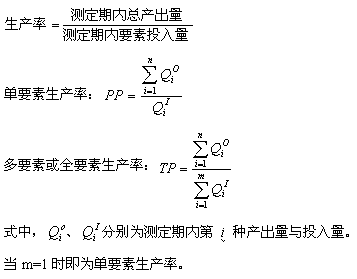
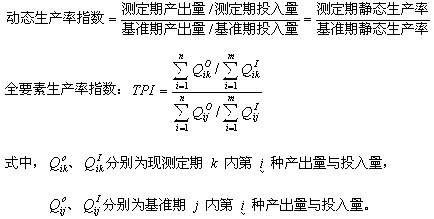

1 . 教学安排
2 . 生产率及提高生产率的意义
3 . 生产率测定
 生产率测定的意义
生产率测定的意义
生产率的种类
生产率计算公式
生产率测定的实施
我国工业生产率测定
4 . 生产率管理
5 . 提高企业生产率的途径
6 . 思考与练习题
 返回课程学习首页
返回课程学习首页
生产率计算公式
(一)静态生产率(某一个时期的生产率)

(二)动态生产率指数(两个不同时期生产率的比值)

部分要素生产率指数 PPI 在测算上可看作全要素生产率指数的特例，只要令上式中 m=1 即可。
从理论上讲，生产率是一个比值，但是，在实际应用中也常采用度量单位表示生产率绝对值。例如，用“货币单位/人·年”作为劳动生产率的单位。